HBM是AI加速器里最关键的单个组件：容量要装得下权重、梯度、优化器状态与激活值，带宽要喂饱持续搬运数据的计算核心。这篇Silicon Co-Design的深读从JEDEC标准史讲到DRAM单元、基底芯片与封装工艺，把HBM的系统架构完整拆开。
作者的核心判断是：HBM正在同时撞上热梯度、良率与「宽而慢」信号完整性三堵墙，因此在不少半导体老兵看来它是「架构上的错误」；本文覆盖可公开阅读的历史与系统拆解部分。
这篇进阶深读讨论的是HBM性能扩展面临的挑战。当前的HBM架构正在同时撞上三堵墙：热性能、互连的海岸线限制（shoreline limits），以及制造成品率。作者的观点是，HBM的头号问题是堆叠内部的热梯度：同一摞芯片里不同层的温度可以差很多，需要复杂的传感器与电路去补偿这种热失配。
文中还提到作者此前写过的两篇相关深读：一篇讲「宽而慢」I/O的HBM架构在扩展时遇到的信号完整性挑战，另一篇讲与HBM并肩作战的第二重要的存储器SRAM，以及它在根本上受什么限制。
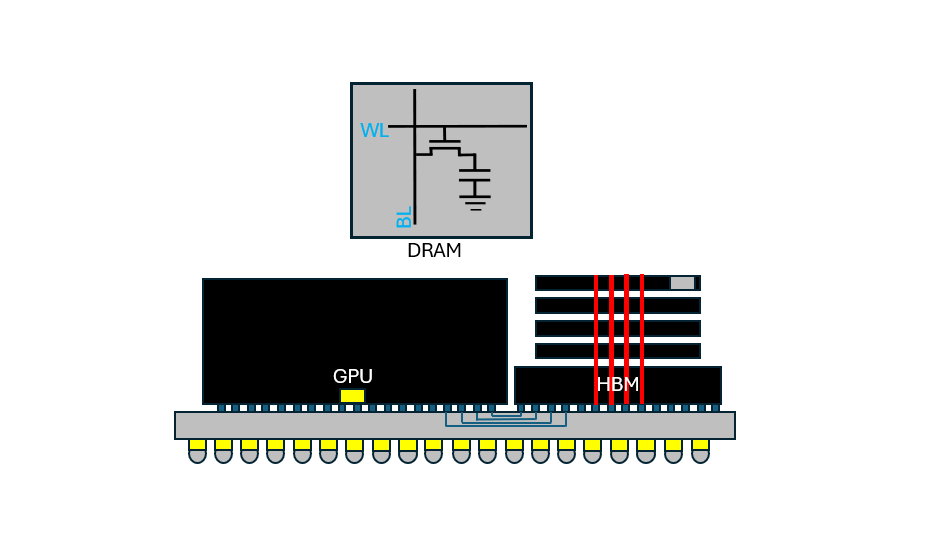
高带宽内存（HBM）可以说是AI加速器里最重要的单个组件，因为它的容量足够大，可以装下AI计算涉及的大量数据：模型权重、梯度、优化器状态与激活值。高数据带宽之所以关键，是因为大部分AI计算真正的瓶颈是数据在内存与计算之间的搬运，而不是计算本身的算力；遗憾的是内存带宽没能跟上算力的扩展速度，这也就是众所周知的冯·诺依曼瓶颈。
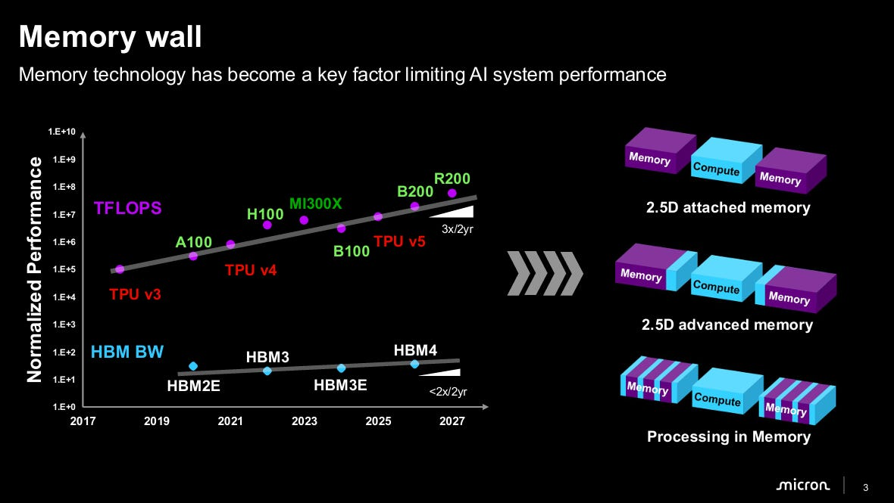
在大部分历史里，内存行业为了熬过一轮轮景气与萧条周期，行事非常保守：内存产品长期运行在高度商品化的海量市场里，受严格的JEDEC（联合电子设备工程委员会）标准约束。这种标准化是必要的，它让不同厂商的内存芯片在功能上可以互换：任何电子厂商都能从任意内存供应商那里买标准DRAM芯片，插进任意内存控制器，而不需要定制PHY或协议桥。需要注意的是，JEDEC标准化只作用于对外引脚接口，die内部怎么实现由厂商自己决定。
JEDEC标准化让内存厂商之间的竞争几乎完全建立在纯粹的经济因素上，比如每比特价格与制造良率。与拥有专有指令集的GPU、CPU不同，内存厂商在历史上很难在系统功能层面做出差异化。
DRAM一直是GPU的主要内存来源，因为它容量大、带宽高，适合高度并行的计算。DRAM的主要类别包括：DDR（双倍数据率），面向系统主内存优化，优先考虑模块化、容量与多通道灵活性；LPDDR（低功耗DDR），面向功耗受限的移动与边缘设备，具备电源门控状态与更低工作电压等特性；GDDR（图形DDR），面向高吞吐图形、游戏主机与边缘AI硬件，用窄总线（每通道约32 bit）在标准多层PCB上跑极高的引脚时钟频率。GDDR通常被认为是HBM的历史前身，它常被形容为「快而窄」，并且历史上被放置得离GPU很远（大约30到100毫米）。
2010年，GDDR在GPU上撞上了严重的功耗与引脚数扩展墙。要提升内存性能，要么加更多GDDR，要么把每引脚数据率推得更高；这两条路都很糟：增加GDDR数量会突破物理海岸线限制与标准芯片封装的面积，而提高频率会让信号完整性在长互连上退化，功耗也随电容乘电压平方乘频率一起上涨。
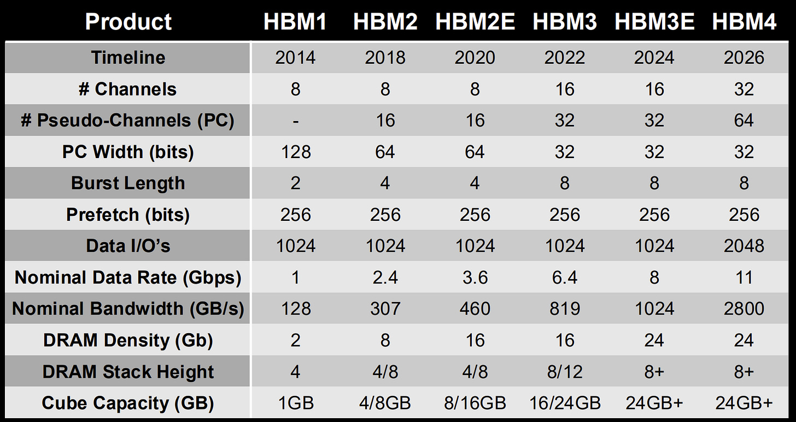
为了跨过这些障碍，AMD与SK Hynix合作，放弃长长的PCB走线，提出一种激进的新架构：把超宽、低数据率的接口放在靠近GPU海岸线的base die（基底芯片）上，然后用硅通孔（TSV）把DRAM芯片垂直堆叠在这个base die上。这就是常说的「宽而慢」路线：更低的每引脚时钟率改善了每比特能耗。SK Hynix在2013年制造出第一片可工作的HBM硅片，JEDEC也因此在2013年10月正式采纳JESD235标准，把HBM接口标准化下来。
HBM的商业首秀是2015年6月，用在了AMD的Fiji GPU架构（Radeon R9 Fury X）上。当时HBM是革命性的：在GDDR5所需板级面积的一小部分里，交付了512 GB/s的聚合带宽。不过HBM起初被当作高端消费级显卡的昂贵奢侈品。从2016年至今，随着新模型架构的出现与GPU成为最有效的AI加速器选择，HBM在性能上逐步改进，并在企业级AI应用中站稳了位置。
2025年，JEDEC发布JESD270-4（即HBM4），为内存厂商统一了标准。这些标准定义了：物理接口与总线宽度方面，2048 bit宽接口、32个独立通道、64个伪通道（每个独立通道再一分为二以减少总线争用）；传输率与带宽方面，基线每引脚8 Gbps，每堆栈聚合带宽2.0 TB/s，配合最高16层DRAM堆叠、单个立方体容量可达64 GB；芯片堆叠与最大容量方面，正式标准化4层、8层、12层与16层DRAM堆叠，用32 Gb裸片实现每堆栈64 GB的最大封装密度。
简言之，多亏了JEDEC，只要内存厂商遵守这些标准来维持互操作性，die里发生什么并不重要。但要在竞争中胜出，内存厂商必须做出差异化，努力把最大聚合带宽推过JEDEC的最低要求。
之所以需要高带宽，是因为多数AI计算都是重复的乘加运算加上计算与内存之间持续的数据搬运。AI算力的主要来源LLM有两个主要处理阶段：prefill与decode。decode往往是最耗时、且内存受限的操作，因为token是从一个庞大的KV cache里自回归地一个一个生成出来的；计算核心大部分时间处于完全「缺数据」的状态，在等权重从内存里搬过来，投机解码一类技术可以缓解内存带宽的压力。
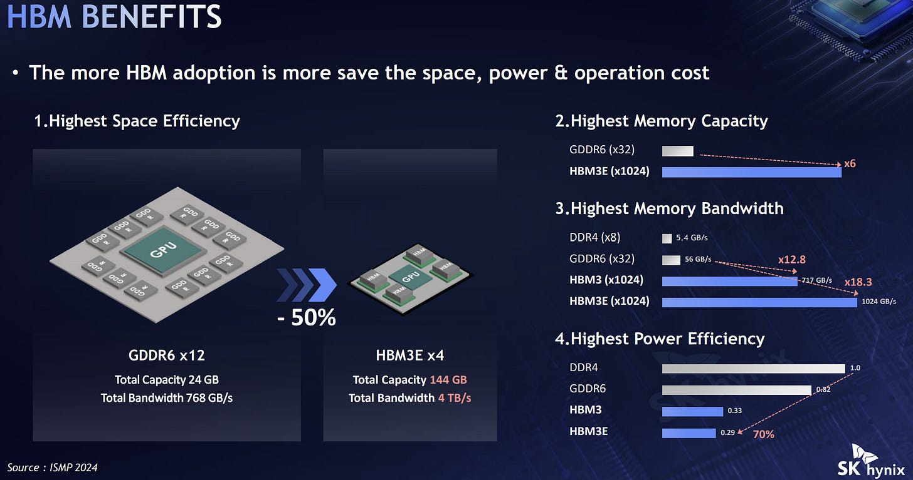
然而在算力基建的扩张中，HBM需求暴涨，导致严重的短缺。在内存短缺的背景下，HBM的替代方案有哪些？
GDDR7：用PAM3把每引脚速度做到28到40 Gbps，并且使用标准的表面贴装BGA技术，而不是HBM那种复杂的2.5D/3D先进封装。引脚数受限导致它的每比特能耗显著更高（5到6皮焦每比特，而HBM低于1皮焦每比特）。目标应用是需要控制成本、无法接受供应链瓶颈、且不要求极致性能的中端企业级AI负载。
纯片上SRAM（晶圆级与LPU）：把大片SRAM阵列嵌入逻辑裸片或铺在整片晶圆上，计算单元紧挨着SRAM块，通过极宽的快速交叉开关相连，从而在decode阶段消除外部内存墙。代价是SRAM容量极其有限：一个70B参数模型需要把数百颗分立SRAM芯片联网起来。目标应用是超低延迟的LLM负载。
聚合的LPDDR5X / LPDDR6阵列：把移动端LPDDR6铺到很宽的内存控制器总线上，带来巨大的容量（128到512 GB）与统一内存架构，功耗却维持在移动端水平。但带宽比HBM慢2到4倍，约500 GB/s到1 TB/s；走线数量过高也带来封装问题。目标应用是本地低功耗AI PC。
近存计算 / 存内计算（PIM）：把简化的处理引擎集成到HBM堆栈附近，既可以放在base die里，也可以紧邻DRAM。它绕开D2D通信，直接在数据bank内操作。代价是PIM计算单元通常更慢、能效更低，还占用本可用于其他功能的空间，同时对编译器工具链提出了额外复杂度。目标应用是定义良好、高度内存受限的逐元素操作。
解耦内存池（CXL 3.x / DDR5）：用CXL 3.x或PCIe 6/7把外部的标准DDR5 DRAM池聚合成共享内存结构，从而解决容量限制，可以挂上TB级的共享系统内存。但信号要穿过复杂的网络，延迟很高。目标应用是大型多租户KV cache、超过GPU内存的推荐模型托管。
高带宽闪存（HBF）：用与HBM相同的堆叠技术，把3D NAND闪存裸片堆起来替代DRAM，把封装内内存密度相比HBM扩大8到16倍。但它继承了NAND的全部物理限制：写入寿命严重受限、读写性能不对称、访问延迟更高，因此通常不希望被频繁写入。目标应用是从静态模型权重出发的读密集LLM推理，以及HBM加HBF混合方案里的高容量扩展层。
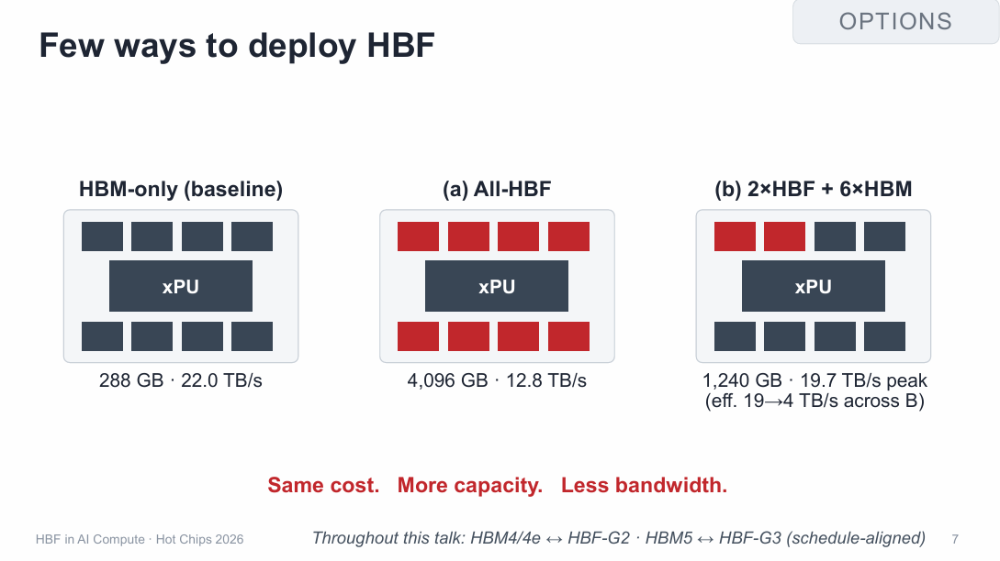
这一部分先给出HBM架构的高层概览，从DRAM的工作原理讲起。
DRAM用极省面积的1T1C单元存储数据：一个晶体管加一个电容。单元被充电到VDD时表示逻辑1，空的时候表示逻辑0。在现代DRAM节点中，电容通常做成高柱或沟槽介质，以最小化表面积，容量大致在15到25飞法之间；一个NMOS晶体管把电容连到bitline与wordline上。这些单元横向通过wordline连成阵列，一次wordline激活会同时访问这一行里的所有单元；纵向则通过bitline连到感放器（sense amplifier），数据从那里读出。
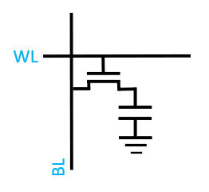
读操作分几步发生：先把bitline预充并稳定到中间电位（电源电压的一半）；然后断开bitline与电源的连接、把选中的wordline拉高，电荷在单元电容与悬空的bitline电容之间重新分配。注意bitline电容通常比单元电容大10到20倍，由于这个电容分压比，bitline上感测到的电压非常小。接着感放器被激活，把电压读出来；需要强调，真正的「读取」过程本质上是破坏性的，因为电荷全都被消耗掉了。之后单元电荷通过感放器涌入的电流被刷新回来，bitline需要一段最小刷新时间；刷新时间结束后，wordline被驱回0。
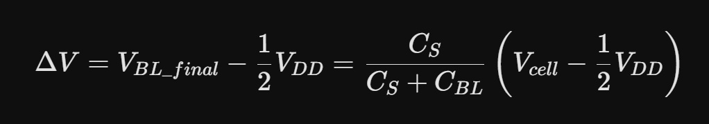
写操作比读简单：先激活wordline，由列写驱动器用强驱动把bitline直接拉到满摆幅的电源或地，给单元电容充电或放电，然后关闭wordline。
DRAM是易失性存储器，因为电容电荷会持续泄漏，除非不断刷新，数据就会丢失。要恢复足够的电荷，需要内存控制器周期性发出刷新命令，读取每一行并把电荷重新放大回满摆幅，赶在电容电压跌破感放器检测阈值之前完成。在更高温度下频繁刷新会吃掉超过10% 的数据带宽。
多数商用DRAM采用倾斜的6F²（3F乘2F）单元拓扑，其中F指特征尺寸／设计规则，未来计划转向4F²。
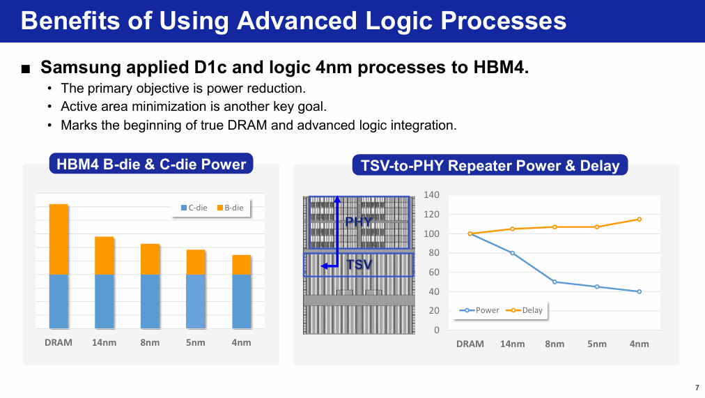
DRAM工艺节点与逻辑工艺节点在根本上不同，因为它们优化的目标不一样：逻辑节点有14到18层以上的金属层，为布局布线工具提供最大互连自由度，靠激进缩小晶体管栅长与栅间距把开关速度推到最高；DRAM节点只有4到6层金属，够连接网格阵列就行，它由有源存储单元阵列的半间距F定义，优化的目标是最大电容电荷存储、超低漏电与低成本。两者通常互不兼容，因为沉积与退火高k电容介质所需的高温（约600度）会破坏标准的高性能逻辑金属栅。
接下来看HBM两个主要组件的关键特征：核心芯片（core die）与基底芯片（base die）。
核心芯片由4到16层DRAM裸片组成，业界正在努力推到20层。每片DRAM裸片包含多个独立通道，每片最多128到256个bank。为了在JEDEC规定的封装Z高度内塞下8到16层DRAM（HBM4是775微米），每片核心芯片在键合C2凸点之前都会被研磨到30到50微米厚。这些层之间用多达两万个硅通孔实现电气连接，这些通孔同时充当机械支柱；由于通孔周围的机械应力，紧邻区域被划为「禁布区」（KOZ），不允许放置DRAM单元，以维持一致的性能与良率。
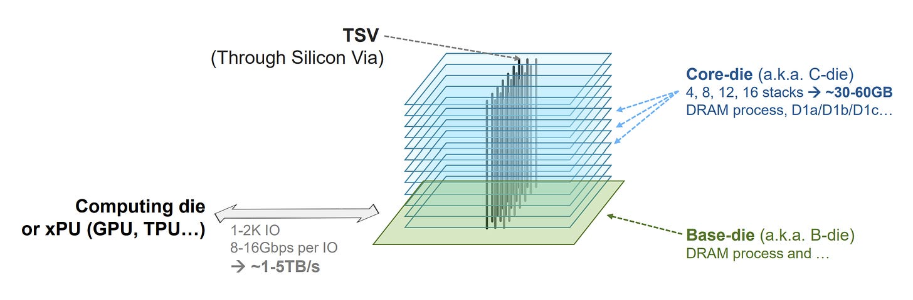
HBM通常使用chip-on-wafer、chip-to-chip或wafer-to-wafer等装配技术逐片堆叠DRAM裸片：装配时先从晶圆上切下单片DRAM裸片、筛选缺陷，再一颗一颗取放到基底晶圆上，这样保证只有通过测试的良品进入堆栈，从而保护整体良率。
堆叠层的主流封装工艺有两种。热压加非导电膜（TC+NCF）：先在晶圆背面施加非导电膜，再由精密键合机对DRAM裸片施加向下的力与局部加热，让微凸点熔穿软化的薄膜形成金属键，三星与美光主要用这种方式；由于固态薄膜充当机械缓冲，它对翘曲的容忍度好，但每层都要单独装配，速度慢。批量回流加模塑底填（MR+MUF）：由SK Hynix首创，先用临时粘性助焊剂把所有裸片松散地堆在一起，再一次性回流，让数千个微凸点同时成型，随后注入液态环氧模塑料作为机械与热缓冲；这一趟就把HBM装配时间相比TC-NCF缩短3到4倍，也让SK Hynix成为HBM的主力供应商、占据大约55% 到60% 的市场份额，但这种工艺对热膨胀系数与装配翘曲更敏感。
这两种工艺对韩国重要到何种程度：HBM堆叠技术在法律上被列为关键国家安全资产，泄露工艺秘密的工程师会面临处罚；MR-MUF的配方或许是当今半导体封装领域最有价值的工艺机密。
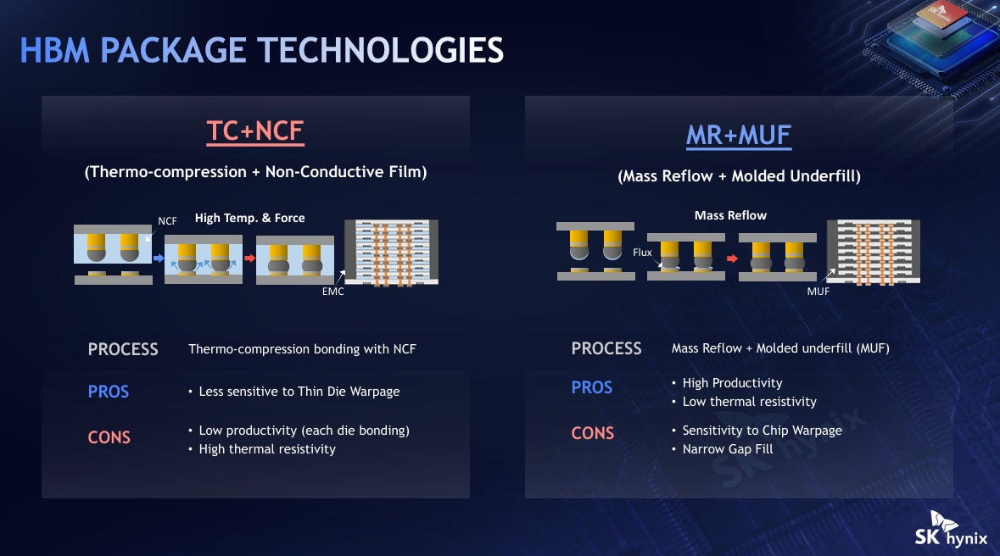
基底芯片是xPU上的主机内存控制器与垂直堆叠的DRAM层之间的主要桥梁。它的PHY包含32个通道、每通道64个数据I/O引脚，合计2048个I/O。在典型的HBM基底芯片中，微凸点PHY把主机连到基底芯片，并跨2.5D硅中介层的微凸点驱动这些信号；信号硅通孔集中在中央，电源与地硅通孔则以网格阵列分布在整个基底芯片的占位面积上。此外还内置自测试（BIST）与直接访问（DA）用于调试与校准。
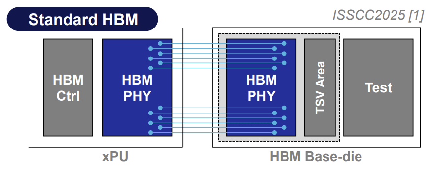
每个通道都使用短距离单端（或伪差分）收发器与转发时钟，按网格格式排布，时钟对称分配；这些收发器为压缩布局面积做了大量功能裁剪，才能把全部2048个都塞在裸片边缘附近。此外，PHY还包含两项基于奇偶校验的重要纠错机制：链路纠错码（ECC）用于纠正内存总线上传输的数据错误；命令/地址奇偶校验用于检测总线上传输的指令与目标地址错误，并给控制器发出错误信号以重传命令帧。随着I/O密度与引脚速度提高、串扰与抖动恶化，这两个特性正在从「有更好」变成「必须有」。
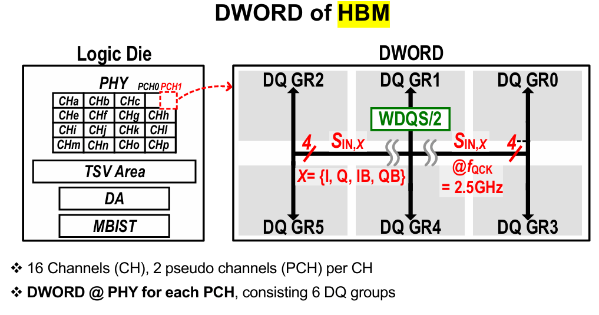
数据通信时，xPU内存控制器以标准JEDEC帧发出读或写命令，这个数据包由两部分组成：地址向量，包含通道／伪通道ID、目标层ID、bank group、bank、行与列地址；命令向量，即操作码，例如先ACTIVATE再READ。
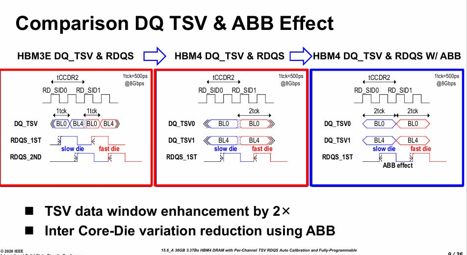
有一个直接约束内存带宽的关键参数叫t_CCDR，也就是连续两个READ命令之间的时间。图中对两个不同DRAM层发出背靠背命令（RD_SID0与RD_SID1），数据沿着两条硅通孔传输；可以看到读选通信号RDQS在不同层上并不相同：堆栈中的飞行时间、热失配与die间工艺差异天然会造成读写时间的变化，堆得越高越明显。结果是系统性能受堆叠核心芯片切片之间的时序变化影响，而这种变化会挤压t_CCDR的余量。补偿已知失配的一种方式是die间读延迟校准，用高分辨率可编程延迟线来校准堆叠中的已知延迟。还有BIST与ABB等其它重要特性，作者留在付费墙之后讨论。
现代HBM4架构的一个好例子来自三星在ISSCC 2026的论文。在三星的HBM里，有32个PHY通道，总共2048个DQ位、每通道64个DQ位。堆栈中的每个通道都包含完整的本地内存子系统，每个伪通道16个bank（每个完整通道32个bank），并配有各自的行列译码器与感放器。这个结构带来总共1024个可独立寻址的bank，带宽3.3 TB/s，在12层堆叠下容量为36 GB。核心芯片使用三星第六代10nm DRAM工艺制造，基底芯片则使用4nm FinFET逻辑工艺。
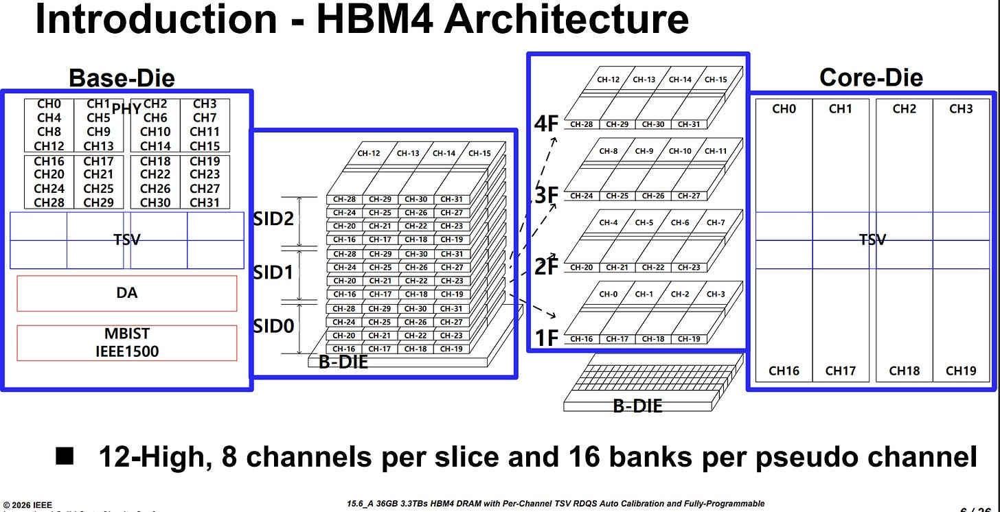
在深入HBM的更多细节之前，先看三家主要厂商各自强调的强项。SK Hynix是先进封装与HBM良率的领先者：它首创MR-MUF，相比传统的薄膜堆叠带来更快的装配吞吐与更好的散热。三星是垂直整合的IDM：作为全球最大的DRAM制造商，它同时拥有内存部门、逻辑代工部门与先进封装部门，被定位为「一站式」供应商，非常适合协同设计。美光是能效与节点架构的创新者：通过为超低I/O功耗优化深紫外（DUV/ArFi）多重曝光，它做到每比特功耗比竞争对手低约30%，而这来自一个战略选择：跳过HBM3、直接优化HBM3e。三家公司都在Hot Chips 2026上介绍了自己的强项，只是有些讲得比其他家更充分。
作者认为，按现状扩展HBM存在四个主要问题：这也是为什么像Pat Gelsinger这样的多位半导体老兵回头来看，会把HBM视为一个「架构上的错误」。这四个问题分别是：堆叠中的热梯度、堆叠带来的RAS（可靠性、可用性、可维护性）挑战、硅通孔造成的面积低效，以及「宽而慢」路线遇到的信号完整性物理极限。
原文还规划了第四部分「扩展性能的新兴趋势」，包含混合键合、把基底芯片切换到逻辑节点并把部分功能从XPU卸载下来、从基底芯片直接扩展内存，以及3D集成。这些内容与第三部分一样，都需要付费订阅才能阅读，本文不代为展开。
参考：https://www.siliconcodesign.com/p/the-system-architecture-of-hbm-how